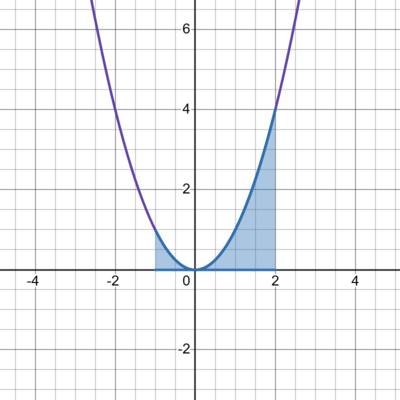

Integral
Definição
A integração é o processo inverso de derivação. Isso significa que, ao integrar uma função, estamos encontrando outra função cuja derivada seja a função original dada. A integral indefinida de uma função \(f(x)\) é represntada por \(\int f( x) dx\) e corresponde a uma família de funções primitivas de \(f(x)\), sempre somadas a uma constante arbitrária \(C\).
Primitiva de uma Função - Integral Indefinida
A primitiva \(F(x)\) de uma função \(f(x)\). Ou seja, se, então \(F(x)\) é uma primitiva de \(f(x)\).
Exemplo:
Encontre uma função cuja derivada seja \(2x\):
\(x^2\) resolve o problema, pois a sua derivada é \(2x\). Observe que, se \(c\) for constante, a derivada de \((x^2 + c)'\) = \((x^2)'\) + \((c)'\) = \(2x + 0\) = \(2x\).
Integral Indefinida
A integral indefinida de uma função é a família de primitivas dessa função, representada por:
\[\int f( x) dx = F(x) + C\]
Exemplo:
Encontre a integral de \(4x^3\).
\(x^4\) resolve o problema, pois a sua derivada é \(4x^3\). Observe que, se \(c\) for constante, a derivada de \(x^4 + c\), será também \(4x^3\), pois a derivada de uma constante é zero: \(\left( x^{4} +c\right) '=\left( x^{4}\right) '\ +\ ( c) '\ =\ \ 4x^{3} \ +\ 0\ =\ 4x^{3}\)
Integral da Função Potência
Para qualquer expoente real \(r\ \neq \ 1\), a integral de uma função potência segue a fórmula
\[ \int x^{r} dx\ =\ \frac{x^{r+1}}{r+1} \ +\ C \]
\[ \int \frac{1}{x} \ dx=\ \ln| x|\ +\ C \]
Exemplos:
\[ = \frac{x^{\frac{1}{2} + 1}}{\frac{1}{2} + 1} + C \]
\[ = \frac{x^{\frac{3}{2}}}{\frac{3}{2}} + C \]
\[ = \frac{2}{3} x^{\frac{3}{2}} + C \]
Combinação Linear de Funções Integráveis
A integral da soma de suas funções é a soma das integrais individuais, e a integral do produto de uma constante por uma função é o produto da constante pela integral dessa função.
Exemplo:
Calcule \(\int(3x^2 + 5\sqrt{x})dx\):
\(\int(3x^2 \, dx) + \int 5\sqrt{x} \, dx = 3 \cdot \frac{x^3}{3} \)
\[ + 5 \cdot \frac{2}{3} x^{\frac{3}{2}} + C \]
\[ = x^3 + \frac{10}{3} x^{\frac{3}{2}} + C \]
Linearidade da Integral Indefinida
A propriedade de lineandade da integral indefinida afirma que a integral da soma de funções é a soma das integrais individuais e que constantes multiplicativas podem ser retiradas da integral. Matematicamente, isso é expresso como:
\[ \int [\alpha f(x) + \beta g(x)] = \alpha \int f(x) \, dx \]
\[ + \beta \int g(x) \, dx \]
Essa propriedade decorre da linearidade da derivada, garantindo que a operação inversa (integração) também seja linear
Exemplo:
Calcule a integral indefinida da função:
\[ f(4x^3 -2x +7x)dx \]
Usamos a propriedade da linearidade da integral para separar os termos e aplicar a regra da potência:
1. Integral de \(4x^3\).
\[ \int 4x^{3} dx\ =4.\frac{x^{3+1}}{3+1} \ =\ 4.\frac{x^{4}}{4} \ =\ x^{4} \]
2. Integral de \(-2x\).
\[ \int -2x \, dx = -2 \cdot \frac{x^{1+1}}{1+1} \]
\[ = -2 \cdot \frac{x^2}{2} \]
\[ = -x^2 \]
3. Integral de 7.
\[ \int 7dx\ =\ 7x \]
Resultado final:
\[ x^4-x^2+7x+C \]
Determinação de função conhecendo a derivada e uma condição inicial.
Quando conhecemos a derivada de uma função e uma condição inicial, podemos determinar a função original por meio da integração Esse processo é utilizado, por exemplo, para encontrar a posição de um móvel a partir de sua velocidade. A relação básica é:
\[ \frac{dx}{dy} \ =f'( x) \rightarrow y\ =\ \int f'( x) .dx\ +\ C \]
onde C é uma constante determinada pela condição inicial.
Exemplo:
A aceleração de um móvel em uma trajetória retilínea é dada por:
\[ A(t) = 0.06t - 0.04 \]
Onde \(A(t)\) está em \(m/s^2\) e \(t\) em segundos. Sabemos que a velocidade inicial do móvel em \(t = 0\) era de \(3 m/s\).
a)Determine a função da velocidade \(V(t)\)
1. Velocidade é a integral da aceleração:
\[ V(t) = \int A(t)dt = \int (0.06t - 0.04)dt \]
2. Integramos cada termo separadamente:
\[ V(t) = 0.06 \frac{t^2}{2} - 0.04t + C \]
\[ V(t) = 0.03t^2 - 0.04t + C \]
3. Usamos a condição inicial \(V(0) = 3\) para encontrar \(C\):
\[ 3 = 0.03(0)^2 - 0.04(0) + C \] \[ C = 3 \]
Portanto, a função da velocidade é:
\[ V(t) = 0.03t^2 - 0.04t + 3 \]
b) Determine a velocidade em \(t = 5\) segundos.
Substituímos \(t = 5\):
\[ V(5) = 0.03(5)^2 - 0.04(5) + 3\]
\[ V(5) = 0.03(25) - 0.2 + 3\]
\[ V(5) = 0.75 - 0.2 + 3\]
\[ V(5) = 3.55 m/s \]
Integral Definida - Teorema Fundamental do Cálculo
O Teorema Fundamental do Cálculo estabelece que se \(F(x)\) é uma primitiva de \(f(x)\), isto é, se \(F'(x) = f(x)\), então a integral definida de \(f(x)\) em um intervalo \([a,b]\) pode ser calculada como a diferença entre os valores da primitiva nos extremos do intervalo:
\[\int _{a}^{b} f( x) dx\ =\ F( b) \ -\ F( a)\]
Esse teorema implica que a integral definida de uma função contínua \(f(x)\) pode ser interpretada como a área sob a curva de \(f(x)\) entre os pontos \(a\) e \(b\). A integral definida é o limite de somas de Riemann à medida que o tamanho das subdivisões do intervalo se aproxima de zero.
Exemplo:
Calcular a integral definida de \(f(x) = x^2\) no intervalo \([1, 2]\).
1.Calcular a função primitiva de \(f(x) = x^2\):
\[F(x) = \frac {x^{2+1}}{2+1}\]
\[F(x) = \frac {x^{3}}{3}\]
Aplicar o Teorema Fundamental do Cálculo:
\[\int _{1}^{2} x^2 dx\ =\ F( 2) \ -\ F( 1)\]
Substituímos os valores de \(F(x)\):
\[F(2) = \frac {2^3}{3} = \frac {8}{3}\]
\[F(1) = \frac {1^3}{3} = \frac {1}{3}\]
Portanto:
\[\int _{1}^{2} x^2 dx\ =\frac {8}{3} - \frac {1}{3} = \frac {7}{3}\]
Propriedades da Integral Definida
Exemplo
Dados:
\(\int _{a}^{b} f( x) dx\ = 3\) e \(\int _{a}^{b} g( x) dx\ = -4\)
Calcule:
a)\(\int _{a}^{b} 2f( x) dx\ \)
1. Use a propriedade da linearidade:
\[ \int _{a}^{b} 2f( x) dx\ = 2 \int _{a}^{b}f( x) dx\ \]
2. Substitua o valor dado:
\[2.3 = 8\]
Resposta: 6
b)\(\int _{a}^{b} (f( x) + g(x)) dx\ \)
1. Use a propriedade da linearidade
\[ \int_{a}^{b} (f(x) + g(x)) \, dx \]
\[ = \int_{a}^{b} f(x) \, dx + \int_{a}^{b} g(x) \, dx \]
2. Substitua os valores dados:
\[3 + (-4) = -1\]
Resposta: -1
c)\(\int _{a}^{b} (-3f( x) + +5g(x)) dx\)
1. Use a propriedade da linearidade:
\[ \int_{a}^{b} (-3f(x) + 5g(x)) \, dx \]
\[ = -3 \int_{a}^{b} f(x) \, dx + 5 \int_{a}^{b} g(x) \, dx \]
2. Substitua os valores dados:
\[-3(3) +(-4) = -29\]
Resposta: -29
Interpretação Geométrica da Integral Definida
A integral definida de uma função \(f(x)\) no intervalo \([a, b]\) representa a área sob a curva da função \(f(x)\) no referido intervalo. Quando \(f(x) ≥ 0\) em \([a, b]\), essa área corresponde à integral:
\[m(A) = \int _{a}^{b} f(x)dx \]
Essa área pode ser aproximada pela soma de retângulos cujas alturas são definidas pelo valor minimo e máximo da função nos subintervalos. No limite quando o tamanho dos subintervalos tende a zero, obtemos a integral definida.
Função Positiva
A integral definida \(\int _{a}^{b} f(x)dx\) calcula a área sob a curva de \(f(x)\) acima do eixo \(x\).
Exemplo:
Calcule a área sob a curva \(f(x) = x^2\) entre \(x = - 1\) e \(x = 2\).
1. A função \(f(x) = x^2\) é sempre positiva.
2. Calcule a integral definida:
\[ \int_{1}^{2} x^2 \, dx = \left[\frac{x^{2+1}}{2+1}\right]_{-1}^{2} \]
\[ = \left[\frac{x^3}{3}\right]_{-1}^{2} \]
\[ = \frac{2^3}{3} - \frac{(-1)^3}{3} \]
\[ = \frac{8}{3} - \left(\frac{-1}{3}\right) \]
\[ = \frac{8}{3} + \frac{1}{3} \]
\[ = \frac{9}{3} = 3 \]
Resposta: A área é 3 unidades quadradas
Função Negativa
A integral \(\int _{a}^{b} f(x)dx\) calcula a área acima da curva de \(f(x)\) e abaixo do eixo x, mas com sinal negativo. Para obter a área real, use o valor absoluto:
\[A\ =\ \Bigl|\int _{a}^{b} f( x) dx\Bigl| \ \]
Exemplo:
1. A função \(x^3\) é negativa em \([-2,0]\) e positiva em \([0,1]\).
2. Divida a integral em duas partes:
\[ \int _{-2}^{1} x^{3} dx\ = \int _{-2}^{0} x^{3}dx\ + \int _{0}^{-1} x^{3}dx\ \]
3. Calcule cada parte:
\[ \int_{-2}^{0} x^3 \, dx = \left[\frac{x^4}{4}\right]_{-2}^{0} \]
\[ = 0 - \frac{(-2)^4}{4} \]
\[ = - \frac{16}{4} \]
\[ = -4 \]
\[ \int_{0}^{1} x^3 \, dx = \left[\frac{x^4}{4}\right]_{0}^{1} \]
\[ = \frac{(1)^4}{4} - 0 \]
\[ = \frac{1}{4} \]
4. Some os valores absolutos para obter a área total:
\[ A = \left| \frac{-4}{1} \right| + \left| \frac{1}{4} \right| = \frac{16+1}{4} = \frac{17}{4} \]
Resposta: \(\frac{17}{4}\) unidades quadradas.
Funções que cruzam o eixo x e Área entre duas funções
Funções que cruzam o Eixo x
Se \(f(x)\) cruza que o eixo \(x\) no intervalo \([a,b]\), divida o intervalo em partes onde \(f(x)\) é positiva e onde é negativa. Calcule as áreas separadamente e some os valores absolutos.
Área entre duas funções
Se \(f( x) \geq \ g( x)\) em \([a,b]\), a área entre as duas curvas é dada por:
\[ A = \int _{a}^{b} (f( x)-g(x)) dx\ \]
Exemplo
Calcule a área entre as curvas \(f(x) = x^2\) e \(g(x) = x\) no intervalo \([0,1]\).
1. Verifique qual função está acima da outra no intervalo \([0,1]\)
2. Calcule a integral da diferença:
\[ A = \int _{0}^{1} (f( x)-g(x)) dx \]
\[= \int _{0}^{1} (x-x^2)dx\ \]
3. Resolva a integral:
\[ \int_{0}^{1} (x - x^2) \, dx = \left[\frac{x^2}{2} - \frac{x^3}{3}\right]_{0}^{1} \]
\[ = \left( \frac{1}{2} - \frac{1}{3} \right) - (0 - 0) \]
\[ = \frac{1}{2} - \frac{1}{3} \]
\[ = \frac{3-2}{6} = \frac{1}{6} \]
Resposta: A área é \(\frac{1}{6}\) unidades quadradas.
Deslocamento e Espaço Percorrido
1. Deslocamento \(\Delta S\)
\[ \Delta S = S(b) - S(a) = \int _{a}^{b} V(t)dt \]
2. Espaço Percorrido (EP):
\[EP = \int _{a}^{b} \Bigl|V(t)\Bigl| \ dt \]
Exemplo
Um ponto material se desloca em trajetória retilínea com velocidade no instante \(t ≥ 0\) (em segundos) dada por:
\[ V( t) \ =\ \left( 2t^{2} \ -\ 4t\right) \ m/s \]
Calcule:
a) O deslocamento entre os instantes \(t = 0 s\) e \(t = 3 s\)
1. O deslocamento é dado pela integral da velocidade:
\[\Delta S = \int _{0}^{3} V(t)dt = \int _{0}^{3} (2t^2 - 4t)dt \]
2. Calcule a integral:
\[ \int_{0}^{3} (2t^2 - 4t) \, dt = \frac{2t^3}{3} - \frac{4t^2}{2} + C \]
\[ = \frac{2t^3}{3} - 2t^2 + C \]
3. Avalie nos limites \(t = 0 s\) e \(t = 3 s\):
\[ \Delta S=\left[\frac{2(3)^3}{3} -2(3)^2\right] \]
\[-\left[\frac{2(0)^3}{3}-2(0)^2\right]\]
\[ = \left[\frac{2(27)}{3} - 2(9)\right] - \left[\frac{2(0)}{3} - 2(0)\right] \]
\[ = \left[\frac{54}{3} - 18\right] - (0) \]
\[ = (18 - 18) - 0 \]
\[ = 0 \]
O deslocamento é \(0\ metros\). Isso significa que o objeto retornou à posição inicial após \(3\ segundos\) .
b) O espaço percorrido entre os instantes \(t = 0 s\) e \(t = 3 s\).
1. Primeiro, determine onde a velocidade \(V( t) \ =\ \left( 2t^{2} \ -\ 4t\right) \ m/s\) é positiva ou negativa
\[2t^2 - 4t = 0\] \[t(2t-4) = 0\] \[t = 0\] \[2t - 4 =0\] \[2t =4\] \[t = \frac{4}{2}\] \[t = 2\]
2. Calcule o espaço percorrido em cada intervalo:
\[EP_{1} = \int _{0}^{2} V(t)dt \]
\[=\int _{0}^{2} (-V(t)dt)\]
\[=\int _{0}^{2} (4t-2t^2)\]
Calcule a integral:
\[\int (4t - 2t^2)dt = \frac{4t^2}{2} - \frac{2t^3}{3} + C\]
\[= 2t^2 - \frac{2t^3}{3} + C\]
Avalie nos limites \(t = 0 \) e \(t = 2 \):
\[ EP_1 = \left[ 2(2)^2 - \frac{2(2)^3}{3} \right] - 0 \]
\[ = \left[ 8 - \frac{16}{3} \right] \]
\[ = \frac{24}{3} - \frac{16}{3} \]
\[ = \frac{8}{3} \, \text{m} \]
\[EP_{2} = \int _{2}^{3} \Bigl|V(t)\Bigl| \ dt \] \[ = \int _{2}^{3} (2t^2- 4)dt\]
Calcule a integral:
\[ \int _{2}^{3} (2t^2- 4)dt = \frac{2t^3}{3} - \frac{4t^2}{2} + C \] \[ = \frac{2t^3}{3} -2t^2 + C \]
Avalie nos limites \(t = 2 \) a \(t = 3 \):
\[ \left[\frac{2(3)^3}{3} - 2(3)^2\right] - \left[\frac{2(2)^3}{3} - 2(2)^2\right] \]
\[ = (18 - 18) - \left[\frac{16}{3} - 8\right] \]
\[ = 0 - \left[\frac{16}{3} - \frac{24}{3}\right] \]
\[ = \frac{8}{3} \, \text{m} \]
3. Some os espaços percorridos:
\[EP_{1} + EP_{2} = \frac{8}{3} + \frac{8}{3} = \frac{16}{3} \ m \]